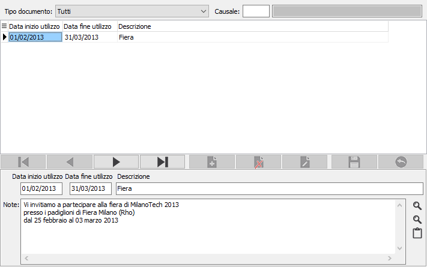

Note documenti
Al fine di gestire l’esigenza di stampare in automatico dei testi in coda al documento è stata introdotta questa tabella di note per data di validità.
Le note possono essere applicate ad uno specifico tipo documento/causale oppure a tutte le causali di uno specifico tipo documento oppure a tutti i documenti ed è possibile definire un periodo di validità della dicitura stessa (che viene verificata con la data del documento stesso). E’ possibile quindi avere più testi attivi nello stesso arco temporale, vengono accodati e stampati come fossero un unico campo note.
La modifica a livello di stampa riguarda tutti i documenti dichiarati a livello di tipo documento.

Una volta selezionato il tipo documento ed eventualmente la causale, nella sezione bassa della finestra è possibile inserire i testi assegnandoli un periodo di validità ed una descrizione che sarà utilizzata a livello della ricerca; il testo può essere inserito direttamente nel riquadro, oppure caricato dai testi fissi già presenti utilizzando il tasto ricerca sulla destra; se il testo fosse molto esteso ed il riquadro risultasse troppo piccolo è possibile aprire il Bloc notes di Windows con il pulsante relativo posto sulla destra, il testo già presente sarà riportato nel Notes automaticamente per essere modificato, al termine con un copia/incolla si può riportare quanto scritto nel riquadro Note.